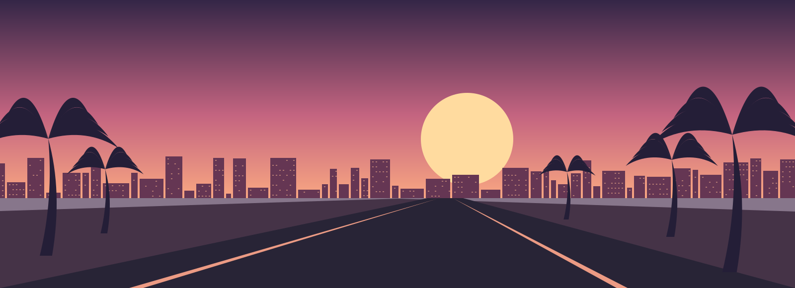

Leonida
After the sun goes down.
Grand Theft Auto VI fan project

Browser demoTake the coast road
Start the drive, then steer across the highway. This miniature scene runs locally in your browser and uses original illustrations.
Use the arrow keys or steering buttons. Pause the drive at any time.
Soon.
Four weeks from the November 24 announcement. The countdown marks the planned preview date. Windows build availability will be announced separately.
December 22, 2026 · 00:00 UTC